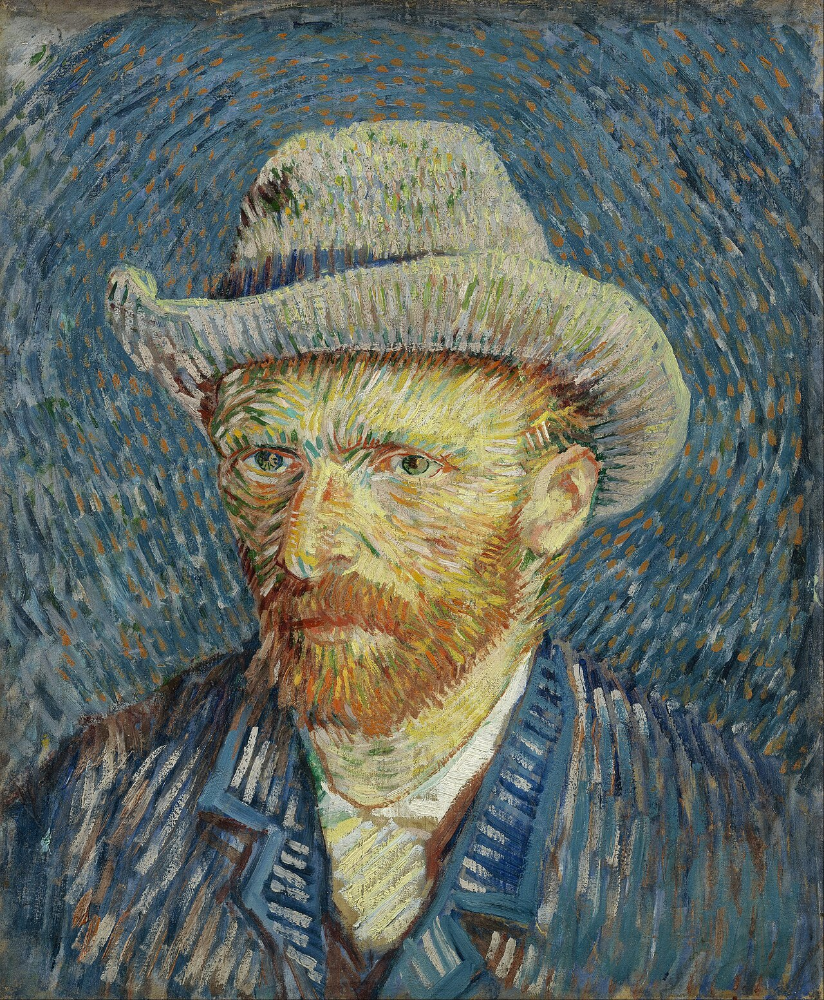
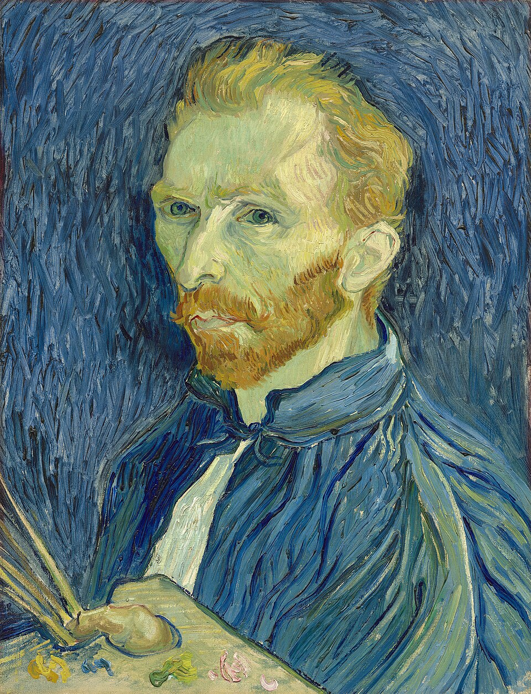

Otto autoritratti per osservare un volto ridipinto più volte nell'arco di tre anni, sottoposto ai cambiamenti tecnici e influenzato dai turbamenti interiori dell'artista.
Sfondo: Vincent van Gogh, Self-Portrait (1889), Musée d'Orsay, Parigi.

